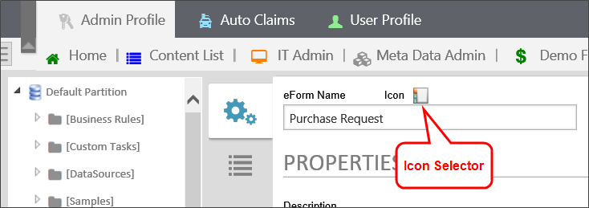

System administrators may also add custom icons, and instructions for doing so can be found in the Creating Custom Icons topic of the System Administrator's Guide.
System administrators may also add custom icons, and instructions for doing so can be found in the Creating Custom Icons topic of the System Administrator's Guide.Every object definition and instance is assigned an icon in Process Director. Anywhere in the settings for any object where you see an icon displayed, you can click on the icon selector to open the Icon Chooser and select an icon for your object.

The Icon Chooser is a tabbed form. The first two tabs contain the standard Built-In icons available in process Director. The third tab contains the legacy icons that were used in prior versions of process Director, and remain in the product for backwards compatibility with earlier versions. The fourth tab displays an custom icons that exist in your installation.
System administrators may also add custom icons, and instructions for doing so can be found in the Creating Custom Icons topic of the System Administrator's Guide.

To select a built-in icon, first choose a color, if desired, to use a different color than the default gray color. The color chooser enables you to select any desired color. legacy icons and custom Icons are image files, so colors cannot be selected for those icon types.

You can choose one of the pre-defined colors on the left side of the color chooser, or you can use the color palettes on the right to select any custom color you desire. If you select a predefined color, the color chooser will automatically close when you select the color. If you use the custom palettes, click the Choose button when you have configured the desired color, and the color chooser will close. Whichever method you choose to select the color, all of the built-in icons shown in the current tab of the Icon Chooser will be displayed in the selected color when the color chooser closes .
Find the icon you'd like to use and click on it. The Icon Chooser will close, and your selected icon will be applied to the object.
To change an icon, simply click on the object's icon selector again. When the Icon Chooser opens, your selected icon will be highlighted. You can then repeat the process above to select a different icon.
Finally, you can store your most-used icons on the Favorite Icons tab of the chooser. Simply find the icon you like, right-click the icon, and select Add to Favorites from the pop-up menu that appears.

Once you do so, that icon will now appear on the Favorite Icons tab.
For Process Director v5.43 and higher, icons used on controls will no longer be grayed out when the control is disabled. This change was made to avoid confusion with grayscale icons that were part of the page design. All icons for disabled fields will now display in their configured colors.